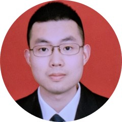

Chen Gao

I am currently an assistant research fellow at Advanced Display Technology Innovation Center
in Fujian Science & Technology Innovation Laboratory for Optoelectronic Information of China (FJOEL).
My group leader is Prof. Enguo Chen at National-Local United Engineering Laboratory of Flat Panel Display Technology in Fuzhou University.
Before that, I obtained my PhD degree at College of Optical Science and Engineering in Zhejiang University (ZJU)
under the supervision of Prof. Haifeng Li.
I got my Bachelor's degree from Tianjin University (TJU).
My research focuses on 3D Displays and Augmented Reality/Vtirual Reality Displays.
Papers
- Chen Gao, Yifan Peng, Rui Wang, Zhuopeng Zhang, Haifeng Li, Xu Liu.
Foveated light-field display and real-time rendering for virtual reality [J].
Applied Optics, 2021, 60(28): 8634-8643 (Editors’ Pick, 编辑精选).
- Chen Gao, Linqi Dong, Liang Xu, Xu Liu, Haifeng Li.
Performance improvement for additive light field displays with weighted simultaneous algebra reconstruction technique and tracked views [J].
Journal of the Society for Information Display, 2023, 31(4): 169-183 (Special Section Paper, 专题报道).
- 高晨, 李子寅, 吴仍茂, 李海峰, 刘旭.
便携式三维显示的发展与展望 [J].
激光与光电子学进展, 2023, 60(8): 0811009 (特邀综述).
- 高晨, 谭小地, 李海峰, 刘旭.
基于U-Net的压缩光场显示图案生成方法 [J].
光学学报, 2024, 44(10):1011002.
- Chen Gao, Yifan Peng, Haifeng Li, Xu Liu.
Toward low-computation light field displays by foveated rendering [C].
Proceedings of SPIE 11765, 2021: 1176514.
- Chen Gao, Yifan Peng, Haifeng Li, Xu Liu.
Gaze-contingent light field rendering for near-eye displays [C].
SID Symposium Digest of Technical Papers, 2021, 52(1): 369-372.
- Chen Gao, Linqi Dong, Liang Xu, Xu Liu, Haifeng Li.
Weighted simultaneous algebra reconstruction technique (wSART) for additive light field synthesis [C].
SID Symposium Digest of Technical Papers, 2022, 53(S1): 243-246 (Best of ICDT22 Nomination, 最佳论文提名).
- Chen Gao, Xu Liu, Haifeng Li.
GPU acceleration of weighted additive light field displays [C].
Imaging and Applied Optics Congress 2022: JW2A.1
- Chen Gao, Haifeng Li, Xu Liu, Xiaodi Tan.
Image quality, uniformity and computation improvement of compressive light field displays with U‐Net [C].
SID Symposium Digest of Technical Papers, 2024, 55(S1):587-590.
- Ziyin Li, Chen Gao, Haifeng Li, Rengmao Wu, Xu Liu.
Portable autostereoscopic display based on multi-directional backlight [J].
Optics Express, 2022, 30(12): 21478-21490.
- Ziyin Li, Chen Gao, Haifeng Li, Xu Liu.
Autostereoscopic display with a multidirectional backlight system and an eye tracker [C].
SID Symposium Digest of Technical Papers, 2022, 53(S1): 76-79 (Distinguished Student Paper, 优秀学生论文).
- Ziyin Li, Chen Gao, Haifeng Li, Rengmao Wu, and Xu Liu.
Angular uniformity improvement of diffractive waveguide display based on region geometry optimization [J].
Applied Optics, 2024, 63(10): 2494-2502.
- Yuchi Huo, Hujun Bao, Yifan Peng, Chen Gao, Wei Hua, Qing Yang, Haifeng Li, Rui Wang, Sung-Eui Yoon.
Optical neural network via loose neuron array and functional learning [J].
Nature Communications, 2023, 14: 2535.
Fundings
- 国家自然科学面上项目，61575175，基于多层空间光调制的高分辨光场近眼显示研究，2016/01-2019/12，64万元，已结题，参与。
- 国家重点研发计划， 2017YFB1002900，面向大数据应用的桌面实时真三维显示技术，2017/01-2021/12，435万元，已结题，参与。
- 国家重点研发计划，2021YFB2802200，裸眼3D显示核心光学器件研究和开发，2022/01-2025/12，1500万元，在研，参与。
- 闽都创新实验室，2024年第一批产学研融合发展专项，2024CXY106，面向近眼显示的超微型Micro-LED投影显示关键技术开发及产业化，2024-01 至 2025-12, 100万元, 在研, 参与。
Services
- Journal Reviewer of Optics Express
- Conference Reviewers of IEEE VR, IEEE ISMAR
Awards
- 2022, Best of International Conference on Display Technology
- 2022, Distinguished Student Paper International Conference on Display Technology
- 2021, Second Class Award, China VR